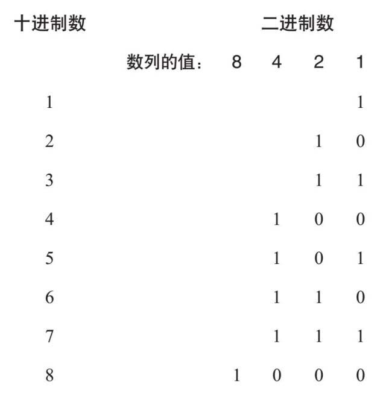
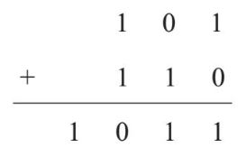
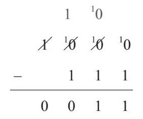
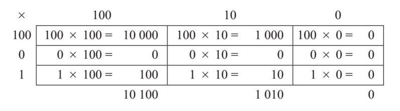
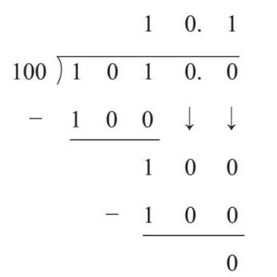

、
、 、
等。所以，这里的0.1表示
。
、
等。所以，这里的0.1表示
。第1章中提到了计算机，人们把繁重的计算问题交给了它们，它们是人类智慧的结晶。人类把计算机数字化，即使用电子器件来制造基于二进制计算的机器。这是一个数字系统，参与运算的每列数值都是2的乘方（如1、2、4、8、16等），而人类用来计数的十进制系统是基于10的乘方（如1、10、100、1 000等）。
这其中的原因在于，从电子学的角度可以将电压看成零或非零，而非零可记作1。如果我们用计算机模拟十进制系统，即用0伏电压代表数字0，以1伏电压代表数字1，并以此类推，那么我们就会遇到麻烦，因为计算机元件中的电阻会随着温度的升高而改变，电压也会随着元件之间电线的长度增加而下降。

你可能认为，二进制是现代计算机使用的计数系统，它是一个相当现代的发明。其实并非如此。世界各地的各种文化都曾在不同的情况下使用过二进制。《易经》自公元前8世纪起就被中国人用于算命，这本书使用了阴、阳这两种二元符号构成了三元符号和六元符号。伟大的德国数学家戈特弗里德·莱布尼茨（Gottfried Leibniz，1646—1716）对《易经》非常感兴趣，并在17世纪末设计了现代二进制系统。
后来，英国逻辑学家乔治·布尔（George Boole，1815—1864）在他的著作《思想法则》（The Laws of Thought ）中，提出了使用二进制数的逻辑系统。现在这个系统被称为布尔逻辑。美国数学家克劳德·香农（Claude Shannon，1916—2001）在1937年第一次在电子电路中使用了二进制系统，并表示它可以用来执行算术和逻辑运算。香农使用开关来表示二进制信息，切断表示0，闭合表示1。
在第二次世界大战期间，他与英国数学天才艾伦·图灵（Alan Turing，1912—1954）会面，讨论如何用计算机破解纳粹密码的问题。他们发现彼此的工作可以互补。香农在1948年发表的题为《通信的数学理论》（A Mathematical Theory of Communication ）的论文掷地有声，这也使他成为现代数字计算机之父。
如果你也想和计算机一样做算术，你将欣喜地发现，计算规则是完全相同的。你只需记住在二进制中，1+1=10。
例如，101+110的运算是这样的：

1 010–111的运算也类似，但请记住10–1=1：

101×110的运算过程如下（请注意，根本不需要用到十进位乘法表）：

于是10 100+1 010=11 110。
对于除法1 010÷100，可以这样计算：

注意，在二进制中也可以有分数，小数点右边的数位表示
、
、
等。所以，这里的0.1表示
。
你可以把这里的所有计算都转换成十进制来验算一下。读者们，快来一试身手吧！
计算机的计算速度取决于芯片中开关（或晶体管）的数量，以及元件的散热程度。本书成稿时，在一个小型商用计算机芯片中就能放置70亿个晶体管。1965年，英特尔公司的联合创始人、美国企业家戈登·摩尔（Gordon Moore，生于1929年）指出，芯片技术的进步使它所装载的晶体管数量每两年就增加一倍，这个过程也被称为摩尔定律[此书分享微 信jnztxy]。
在过去5年中摩尔定律处于停滞状态，因为我们达到了物理极限。现在生产的晶体管尺寸小到用纳米来度量，也就是说你可以在一个点的面积上安装上百万个晶体管。那么，未来将如何发展呢？
一种可能性是开发依赖于量子力学奇特效应的量子计算机，这在理论上可以使量子计算机比传统数字计算机的运算快很多。
值得一提的是，计算机与人类的高效是同步的，有时，二进制和十进制之间的差异可能意味着生死之别。1990年8月2日，伊拉克开始入侵科威特，海湾战争开始。萨达姆·侯赛因领导的伊拉克拒绝撤离刚占领的科威特，除非以色列让出“占领”的土地。
8月17日，包括美国和英国在内的34个成员国组成的联盟发起了“沙漠风暴”行动，目的就是解放科威特。伊拉克军火库中的飞毛腿弹道导弹是苏联在冷战时期发展起来的新型武器。弹道导弹实际上就是火箭，它借助所携带的燃料可以进入地球大气层外，然后在重力作用下击中目标。其射程有几百千米，伊拉克用它们来袭击以色列、沙特阿拉伯等目标。
美国军方在几个地方布置了爱国者导弹发射装置。爱国者导弹非常快速和敏捷，与高精度雷达相结合，理论上能够摧毁空中的飞毛腿导弹。爱国者系统使用雷达信息来判断飞毛腿导弹的速度和方向，从而计算出它的轨迹，并计算出爱国者导弹的发射地点。这不是多困难的事情，因为爱国者系统检测飞毛腿导弹时，飞毛腿导弹只是在重力的作用下下落。
精确的计时对于这项工作来说至关重要。爱国者软件的时钟跟踪时间以 秒计。也就是说雷达每秒记录10次，以跟踪飞毛腿的行踪，并更新对其轨迹的预测。
早些时候，计算机使用二进制系统。要计算出二进制的 ，需要计算1÷1 010。
在这里我把二进制的长除法略掉，直接告诉读者用二进制表示的 是一个循环小数：

我可以把这个数写成 。它使用了我们在前文看到的符号。
爱国者系统所使用的计算机可以处理多达24位数字。这似乎相当精确了，但是，由于二进制的 是循环小数，所以他们必须要切断数字的尾部。换算回十进制系统后，实际时间就不是测量的 （或0.1）秒，而是0.099 999 91秒，误差是0.000 000 09秒。这个时间看似微不足道，但随着时间的推移，误差会越来越大，因为时钟每秒钟就快了 秒。
1991年2月25日，在沙特阿拉伯已经运行了大约100个小时的爱国者系统电脑总误差约为 秒。
秒。
同样，这似乎也不是一个严重的错误。然而，从空中坠落的飞毛腿，其速度约为每秒1.5千米，飞毛腿在这段错误的时间内行进了约500米。
这意味着，爱国者导弹将会朝着错误的地方发射，或者根本不能发射，因为雷达无法找到飞毛腿的位置，可能认为这是一次错误的检测。
于是就有了在沙特阿拉伯发生的那次事件。一枚飞毛腿导弹击中美军营房，造成28名士兵死亡，更多人受伤。一切都是由舍入误差引起的。
正因如此，学会舍入变得非常重要，我们将在下一章中详细分析。